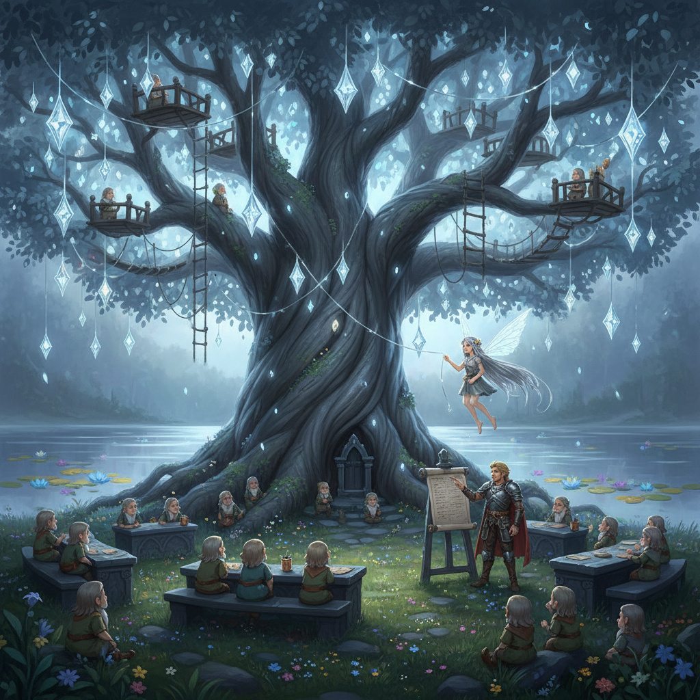
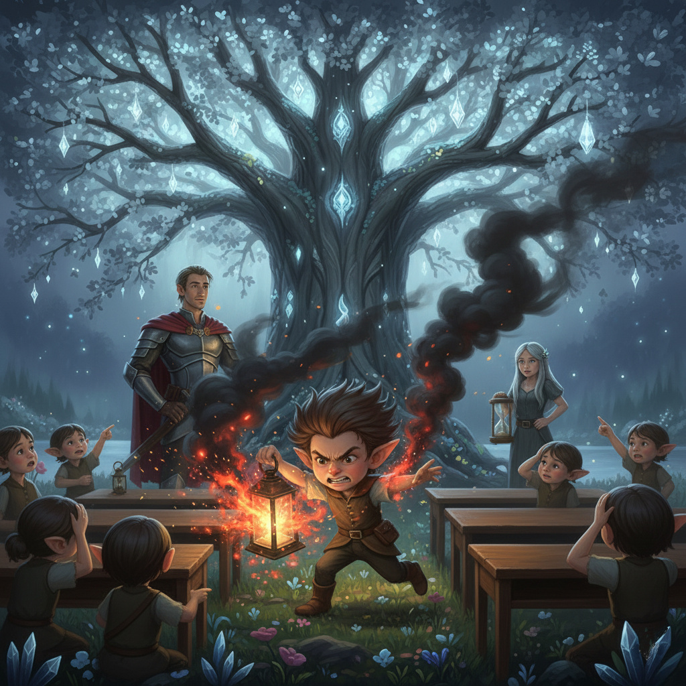
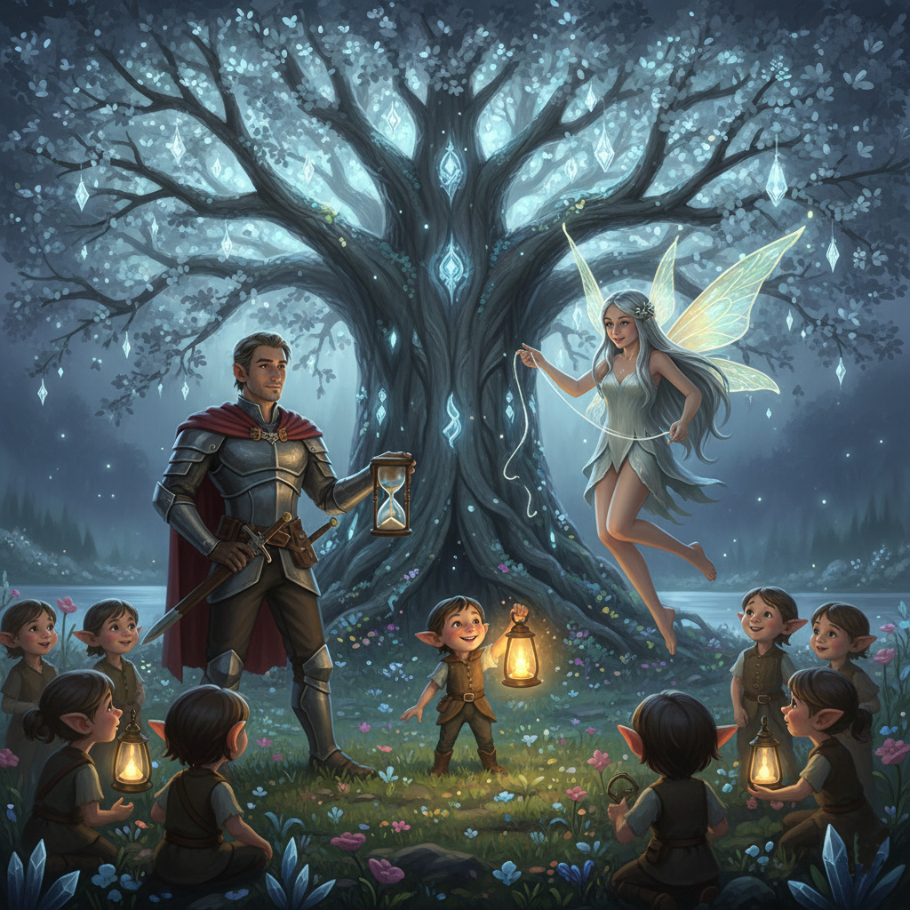
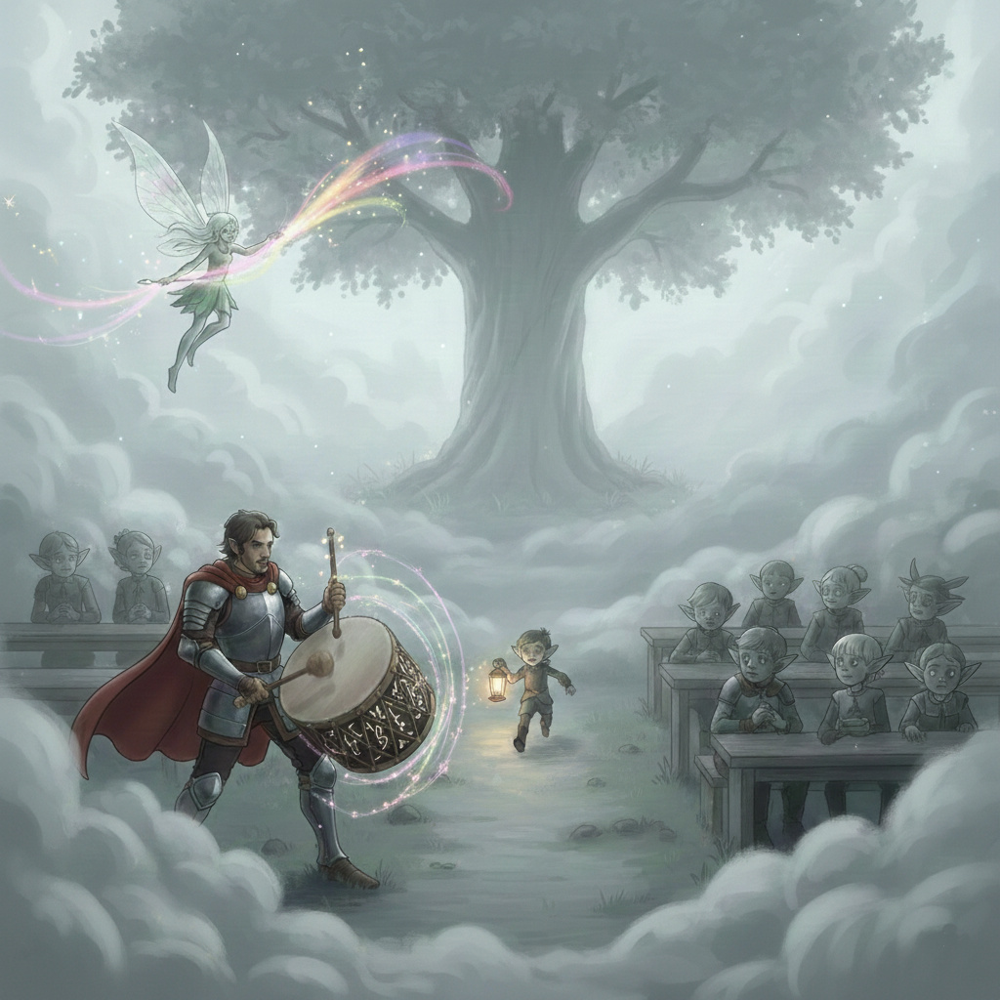
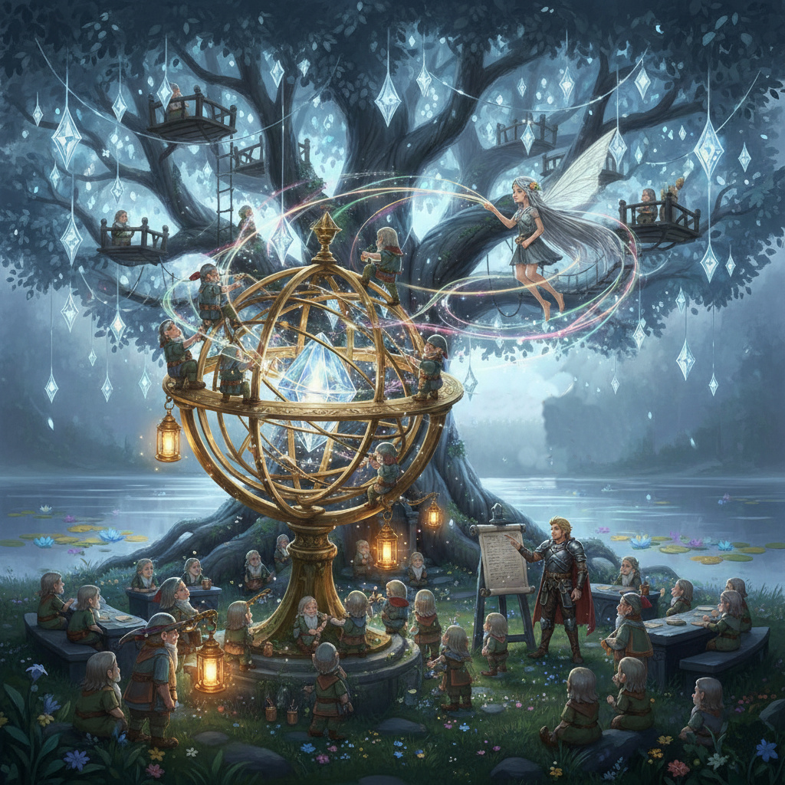
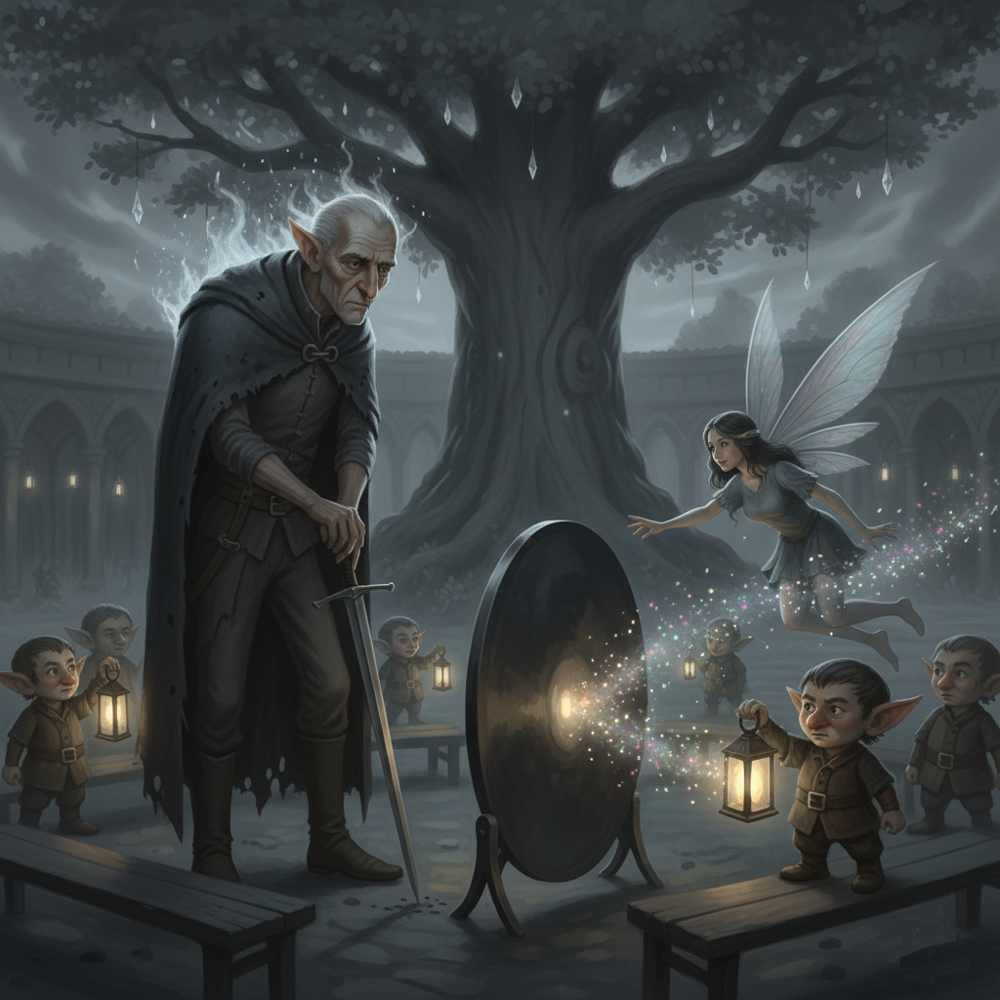
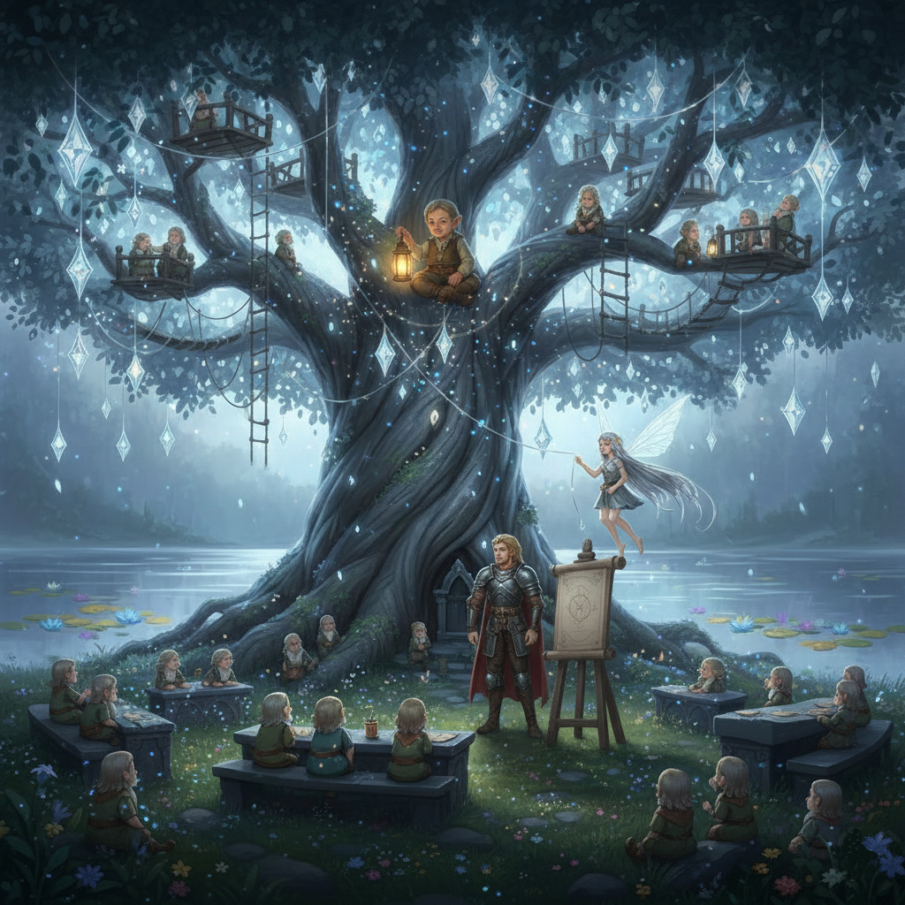

Ajánlom egy kedves barátomnak, aki keresi a pillanatban rejlő örökkévalóságot, és mer hinni a szív órájának szavában.
Ahol a Szivárvány-tó szelíd hullámai a partot nyaldossák, és az idő szívverése tapinthatóvá válik, ott emelkedik az ég felé egy ősrégi, ezeréves platánfa. Ennek a hatalmas fának a lombjai között – melyek éjszaka ezüstösen világítanak, mintha apró csillagokat hordanának – terül el a Csillagok Tanodája.
Ez nem egy egyszerű iskola. A világ peremén élő, dolgos kismanók, akik hosszú időn át elfeledték az égi jelek olvasását és saját belső fényük tiszta működését, itt találhatnak menedékre. Lámpásaik elhalványultak, lépteik bizonytalanná váltak a sötétben, és a feledés homálya kezdte elnyelni az ősi tudásukat.
Ezt a különleges tanodát Honóra, a Pillanat Tündére és Alerion, a Várakozás Lovagja alapították. A tóparton kötött szövetségük erejével felismerték, hogy a tudás, amit ők maguk elsajátítottak az idő és a csend megértéséről, nem maradhat rejtve. Küldetésükké vált, hogy a manóknak visszaadják a csillagokba vetett hitüket és a saját fényükbe vetett bizalmukat.
Alerion hozta el a Tanodába a Rend és a Kitartás erejét. Ő építette fel a tanulás stabil alapjait: a csiszolt obszidián padokat, a pontos időmérést szolgáló homokórákat, és a fegyelem fontosságát, ami nélkül a legnagyobb tehetség is szétforgácsolódik. Azt tanította, hogy a kitartás nem börtön, hanem a folyó medre, ami célhoz vezeti az energiát.
Honóra pedig a Pillanat Művészetét és a Kreativitás Varázsát hozta el. Ő tanította meg a manóknak, hogyan ragadják meg a hullócsillag visszfényét a harmatcseppben, hogyan szeressék az éppen most lángra lobbanó szikrát, és hogyan váltsák valóra álmaikat a tiszta szándék erejével. Az ő gyengéd útmutatásával értették meg, hogy a türelem nem unalom, hanem a legmélyebb varázslat előkészítése.
Így lett a Csillagok Tanodája az a hely, ahol a rend és a varázslat kéz a kézben jár, ahol a legapróbb manó is megtalálhatja a saját fényét, és megtanulhatja, hogyan olvassa az éjszakai égbolt rejtett üzeneteit. Itt kezdődik Rumi története is...
A Tanoda udvarán, az ősi platánfa alatt nem a csend volt a gond, hanem a túl sok zaj. Rumi, a legkisebb, de legnyughatatlanabb kismanó úgy cikázott a padok között, mint egy elszabadult villám. A lámpása nemhogy nem világított, de valósággal szikrákat hányt, füstölt és rázkódott a kezében. Rumi mindenbe belekezdett, de semmit nem fejezett be: egy pillanat alatt akart megtanulni repülni, csillagport gyúrni és énekelni.
Alerion figyelte a kismanó kaotikus táncát. Látta, hogy Rumi nem rosszindulatú, csak túl sok benne a tűz, és nincs, ami megtartsa. A lovag nehéz, határozott léptekkel Rumi útjába állt. Nem állította meg durván, csak kinyújtotta a kezét, mint egy szikla, aminek a hullám nekiütközik.
– Állj meg egy pillanatra, Rumi! – mondta Alerion, és hangja úgy zengett, mint az esti harangszó. – A szélvész hatalmas erő, de csak a vitorla teszi hasznossá. Ha nem adsz irányt a tüzednek, csak hamu marad utána.
Alerion leültette Rumit egy kőasztalhoz, és elé tett egy homokórát. Megtanította neki a Fókusz Tudományát: hogyan kell egyetlen porszemet figyelni, amíg az le nem ér az üveg aljára. Ez volt a fegyelem: megtartani az erőt, amíg el nem jön a megfelelő pillanat.
Honóra ekkor lépett közelebb, lágyan, mintha a lába sem érné a füvet. Látta, hogy Rumi már nem cikázik, de a kismanó keze még mindig remegett a visszafojtott energiától. Honóra tudta, hogy a fegyelem mellé értelem és cél is kell.
– Alerion megtanított arra, hogyan uralkodj magadon – suttogta Honóra, és egy vékony ezüstszálat húzott elő az ujjai közül. – Most én megmutatom, hová vezesd ezt a fényt. Ne fojtsd el a tüzet, Rumi, csak tanítsd meg neki a táncot.
Honóra ráhelyezte a kezét a manó vibráló lámpására. Azt tanította neki, hogy ne akarjon egyszerre mindent, csak azt az egyetlen szikrát szeresse, ami éppen az ujjhegyén táncol. Megmutatta neki, hogy a türelem nem unalom, hanem a legmélyebb varázslat előkészítése.
Rumi nagyot sóhajtott. Alerion stabilitása biztonságot adott neki, Honóra jelenléte pedig célt. A lámpása rázkódása megszűnt. A vad szikrák helyett a búra belsejében egyetlen, tiszta, borostyánsárga láng gyúlt ki, ami nem füstölt, nem ugrált, hanem egyenletes, meleg fénnyel világította be a platánfa alatti félhomályt.
Rumi először életében nem rohanni akart, hanem csak nézni a saját fényét.
Egy borús napon, amikor Alerion éppen az alkimisztikára oktatta a manókat, egy különös, ezüstös-szürke köd telepedett a platánfa köré. Nem hideg volt, inkább... unalmas. Aki belépett a ködbe, hirtelen elfelejtette, mit is akart csinálni. A manók leültek a padokba, és csak bámultak maguk elé.
– Ez a Halogatás Homálya – jegyezte meg Alerion, miközben próbálta letisztítani a homokóráit, de a homokszemek mintha megálltak volna a levegőben. – Ha nem teszünk valamit, a Tanoda fényei kialszanak, mert senki nem érzi majd az indíttatást, hogy táplálja őket.
Alerion tudta, hogy a köd ellen nem karddal, hanem ritmussal kell küzdeni. Elővett egy hatalmas, ébenfából készült dobot, és ütni kezdte. Bumm. Bumm. Bumm. Minden ütés egy-egy feladatot jelölt: a rendrakást, a lámpások tisztítását, a csillagtérképek megrajzolását.
– Ne várjatok a kedvre! – dörögte Alerion. – A fegyelem az, ami átvezet minket a sötétségen, amikor a motiváció cserbenhagy. Tegyétek meg az első lépést, a többi követni fogja!
Honóra látta, hogy a manók mozogni kezdtek Alerion dobpergésére, de a mozdulataik gépiesek és szomorúak voltak. A szürkeség még mindig ott ült a vállukon. Odalépett a köd széléhez, és a kezét a semmibe mártotta.
– Alerion megadta az ütemet – mondta lágyan –, de én megadom a dallamot. A munka nem lehet csak kötelesség, annak örömnek is kell lennie.
Honóra nem beszélt, hanem festeni kezdett. Nem vászonra, hanem a szürke ködre. Minden ecsetvonásával egy-egy elfeledett álmot vagy egy vidám emléket idézett meg. A szürkeségbe apró, fénylő réseket ütött, ahol beszökött a remény. Megmutatta a manóknak, hogy a legnehezebb feladatban is ott rejlik egy csipetnyi varázslat, ha tudják, miért csinálják.
Rumi volt az első, aki feleszmélt. Alerion ritmusa adott neki egy keretet, Honóra színei pedig lelkesedést. – Én leszek a Szikra-futár! – kiáltotta, és borostyánfényű lámpásával befutott a sűrűjébe. Ahol elhaladt, a köd szétrebbent a lámpásának melegétől.
A manók végül rájöttek: ha Alerion rendszerét követik és Honóra lelkesedésével töltik meg, a Halogatás Homálya nem bír el velük.
A Tanoda udvarán egy hatalmas feladat várt a manókra: meg kellett alkotniuk az Égi Iránytűt, egy olyan mágikus szerkezetet, amely akkor is mutatja az utat a völgy lakóinak, ha a felhők eltakarják a csillagokat. Ez volt az első alkalom, hogy az összes manónak egyetlen közös célon kellett dolgoznia.
Rumi, aki mostanra mestere lett a gyorsaságnak, már az első órában összehordta az összes szükséges kristályt. – Kész is vagyunk! Csak rakjuk össze és gyújtsuk meg! – kiáltotta türelmetlenül, miközben majdnem fellökte a többieket. Ám a többi manó sokkal lassabb volt. Volt, aki még csak a kristályok csiszolásánál tartott, mások pedig órákig válogatták a megfelelő ezüstszálakat. Az udvaron feszültség vibrált: Rumi dühöngött a lassúság miatt, a többieknek pedig elment a kedvük, mert úgy érezték, sosem érnek a végére.
Alerion felemelte a kezét, és a mozdulatára csend telepedett a platánfa alá. Odalépett a félkész Iránytűhöz. – Rumi, a gyorsaságod a motor, de a többiek alapossága a váz – magyarázta Alerion. – Egy lovagi páncél sem ér semmit, ha a csatok nincsenek precízen rögzítve. A közös munka nem verseny, hanem egy gépezet, ahol minden fogaskeréknek megvan a maga sebessége. Ha az egyik túl gyorsan forog, a többi eltörik.
Alerion felosztotta a munkát: Rumi lett az "Energiafelelős", akinek az volt a dolga, hogy a többiek keze alá dolgozzon, és fenntartsa a lelkesedést, míg a megfontoltabb manók végezték az illesztéseket.
Honóra látta, hogy a rend helyreállt, de a szívek még mindig külön utakon jártak. Elővett egy láthatatlan ezüstfonalat, és körbejárta a manókat. – Nézzétek – mondta Honóra –, ha mindenki csak a saját darabkáját nézi, az csak egy kő marad. De ha megérzitek a mellettetek álló manó szívverését, a darabkák beszélni kezdenek egymáshoz.
Megkérte a manókat, hogy fogják meg egymás kezét egy pillanatra. Honóra érintésére a manók belső fénye – Rumi borostyánsárgája és a többiek szivárványszínű csillanásai – összefolytak. Már nem "én" és "ők" voltak, hanem a Tanoda. A munka hirtelen könnyűvé vált, mert az irigységet felváltotta az elismerés.
Amikor az utolsó kristály is a helyére került, az Égi Iránytű nem egyszerűen világítani kezdett, hanem egy hatalmas, égi térképet vetített a platánfa lombjai közé. Rumi rájött, hogy bár ő volt a leggyorsabb, a végeredmény szépségéhez mindenki türelmére szükség volt.
Az Égi Iránytű felragyogott, fénye messze szállt a völgyek fölé, eljutva a legrejtettebb zugokba is. Híre eljutott a nyugati, ködbe burkolózó Árnyékhegyek közé is, ahol a manók féltek a fénytől, és az elfeledett sötétségben éltek. Egy éjszaka, amikor a Csillagok Tanodája mély álomban pihent, egy furcsa, szürkéslila fény villant fel az ösvényen.
Másnap reggel egy ismeretlen, magas, hajlott hátú alak állt a platánfa alatt. Nem volt manó, nem volt ember, de még csak tündér sem. Arca ráncos volt, szeme mélyen ült, és a háta mögött mintha hosszú, fáradt árnyékok remegtek volna. Beszéde súgás volt, hideg, mint a hajnali fagy. – Én vagyok Kételkedő Kórusz, az Árnyékhegyek küldötte – mondta. – Hallottam a Tanodátokról, és elhoztam nektek egy próbát. A völgy népe egyre inkább a ti fényeitekben bízik, de mi van, ha a fény csak illúzió?
Kórusz elővett egy furcsa, tükörszerű lemezt. A lemez nem tükrözött semmit, csak magába szívta a fényt. – Ha a fényetek valódi – folytatta Kórusz –, akkor ennek a lemeznek is ragyognia kell. De ha nem sikerül, akkor a Tanoda fénye sem ér többet, mint a hamis remény. Adok nektek egy napot.
Amint Kórusz a lemezt a platánfa törzsének támasztotta, egy hideg, szürke aura kezdett szétáradni. A manók lámpásai elhalványultak, a színek tompábbá váltak, és a levegőben terpeszkedő kétség mágnese elvonta az energiát mindentől. Rumi lámpása is gyengébben vibrált, mint valaha. – De hát miért kételkedne bárki a fényben? – kérdezte Rumi szomorúan. Alerion arcán komolyság ült. – Ez a legnagyobb ellenség, Rumi. Nem a sötétség maga, hanem az, ami a sötétségbe taszít: a hit elvesztése.
Alerion látta a manók arcán a félelmet. Odalépett a lemez elé, és felemelte a kardját. – A hit nem a külső fényből táplálkozik, hanem a belső elhatározásból! – dörögte. – Kórusz nem a lámpásokat kérdőjelezi meg, hanem a szíveteket!
Alerion nem a lemezre csapott, hanem a kardja hegyével a földbe. – Mutassuk meg neki, hogy a rend és a kitartás nem csak a szép időkben él! Álljatok körbe, és emlékezzetek minden leckére, amit Honórától kaptatok a fényről!
Honóra csendben lépett elő. Tudta, hogy Alerion rendszere erőt ad, de most a manók lelkének mélyére kellett nyúlni. Odalépett Kórusz lemeze elé, és nem próbálta megvilágítani, hanem lehunyta a szemét.
– A kétség a feledés testvére – suttogta. – De az emlékezés a fény forrása. Honóra lassan végigsétált a körben álló manók között, és mindenkihez hozzáért egy pillanatra. Minden érintésnél a manók felidézték az első tüzet, amit meggyújtottak, az első csillagot, amit megértettek, az első alkalommal, amikor segítettek egymásnak. Ezek a fényes emlékek apró, színes szikrákká váltak, amelyek Honóra ujjain át a levegőbe szálltak.
Rumi, Alerion parancsára és Honóra érintésére felidézte azt a pillanatot, amikor a lámpása először szikrázott. A remény lángra lobbant a szívében, és a kezében lévő lámpás ismét borostyánsárgán izzott. Ezt a fényt odafordította Kórusz lemeze felé. Egyenként, lassan, a többi manó is követte a példáját, a kezükben lévő lámpások is megteltek fénnyel.
A rengeteg apró fény Kórusz tükrös lemezén nem tükröződött, hanem áthatolt rajta. A sötét felület lassan szivárványos árnyalatokat öltött, majd egyre világosabbá vált, végül pedig olyan fényesen ragyogott, mintha egy apró csillag lett volna.
Kórusz, a Kételkedő, arca először meglepettséget, majd valami egészen újat tükrözött: csodálatot. – Lehetséges – suttogta –, hogy a fényeteket a kétség sem tudja elnyelni. Talán van még remény az Árnyékhegyeken túl is.
Eltelt közben egy év. A Tanoda híre már nemcsak a völgyet és az Árnyékhegyeket érte el, hanem a legtávolabbi szigeteket is. A platánfa koronája hatalmasra nőtt, levelei között már nemcsak lámpások, hanem valóságos, apró csillagok laktak, amiket a manók közösen gondoztak.
A Tanoda udvarán már nem voltak feszült viták vagy elégedetlen mormogások. A rend, amit Alerion tanított, természetessé vált, mint a lélegzetvétel: minden manó tudta a helyét, és mindenki örömmel végezte a dolgát, mert tudták, hogy minden apró mozdulat egy nagyobb egész része. Honóra művészete pedig átitatta a hétköznapokat; a manók már nemcsak lámpást tisztítottak, hanem verseket suttogtak a fénynek, és színeket kevertek a hajnali ködből.
Kórusz, az egykori Kételkedő, a Tanoda egyik legkedvesebb vendége lett, aki az Árnyékhegyekből hozott bölcsességgel emlékeztette a manókat a fény értékére.
A legnagyobb változás azonban Rumi szívében ment végbe. Az egykor örökmozgó, türelmetlen manó, aki mindig a következő pillanatot kergette, megváltozott. Egy aranyfényű alkonyaton Rumi a platánfa legmagasabb ágán ült, és a kezében tartotta azt a borostyánfényű lámpást, amit az első napon kapott.
Már nem akart rohanni. Már nem akarta, hogy az ő lángja legyen a leggyorsabb vagy a legfényesebb. Rumi lehunyta a szemét, és mélyet szippantott a virágillatú levegőből. Érezte Alerion szilárd nyugalmát a fa törzsében és Honóra lágy érintését a szélben.
– Végre... – suttogta Rumi, és a szívében olyan béke áradt szét, ami fényesebb volt minden lámpásnál. A borostyánfényű láng már nem vibrált idegesen, hanem egyenletesen, melegen ragyogott, tökéletes összhangban a környezetével. Rumi megértette, hogy a legnagyobb kaland nem a rohanás, hanem a jelenlét.
Alerion és Honóra a fa tövében állva nézték tanítványaikat. Alerion leeresztette a kardját, mert a rend immár a szívekbe költözött, nincs szükség külső fegyelemre. Honóra pedig letette az ezüstfonalat, mert a manók lelke már magától is összefonódott.
A Csillagok Tanodája beteljesítette küldetését: egy olyan hellyé vált, ahol a tudás, a szeretet és a béke nem csak célok voltak, hanem a mindennapi létezés alapkövei. A völgyben soha többé nem volt teljes sötétség, mert minden ott lakó tudta: amíg van egy manó, aki békével a szívében gyújtja meg a lámpását, addig a fény örökké élni fog.
A Tanoda udvarán a platánfa levelei békésen zizegtek, az Égi Iránytű pedig biztos fénnyel ragyogott a manók felett. Alerion és Honóra egymásra néztek: tudták, hogy itt a rend és az inspiráció már biztos alapokon nyugszik. A manók képessé váltak arra, hogy maguk tartsák egyensúlyban világukat.
Honóra és Alerion nem búcsúzkodott hosszan a számukra szeretett helytől. Vállukra vették vándorbotjukat, és elindultak a völgyből kivezető ösvényen. Nem várták meg az alkonyt; a reggeli napfényben vágtak neki a hegyeknek, amelyeken túl az emberek világa és ismeretlen tájak feküdtek.
Tudták, hogy a természetfeletti kapcsolatuk ereje – a fegyelem és a szárnyaló képzelet egysége – bárhol képes békét teremteni. Nem néztek hátra, mert előttük ezer új történet, megoldásra váró rejtély és felfedezetlen küldetés várt. Az útjuk nem ért véget, csupán egy új, minden eddiginél hatalmasabb fejezetéhez érkezett.